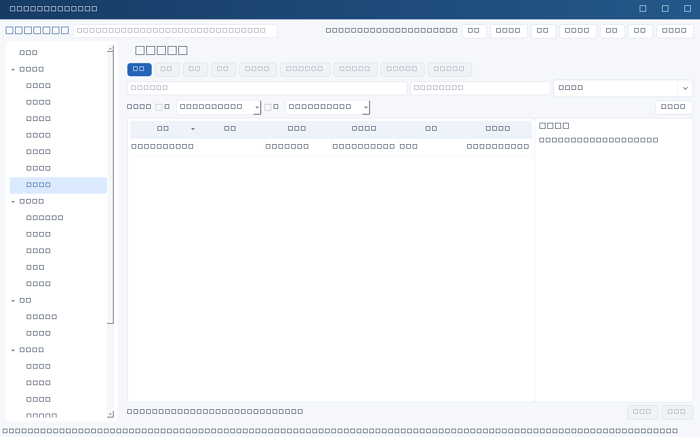
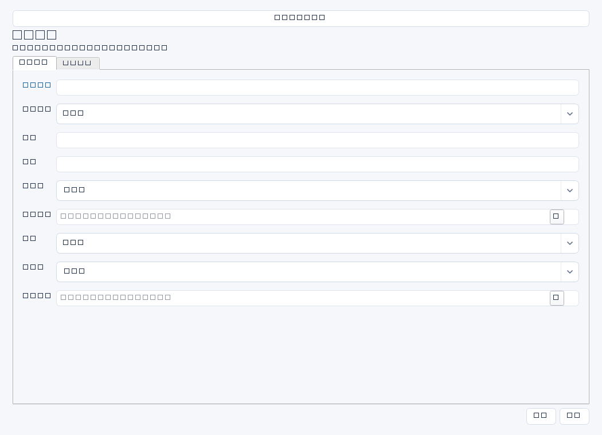

记录可能影响IT业务连续性、安全、合规、成本和交付的风险，明确影响、措施、责任与残余风险处置。风险接受需要真实业务判断，不由状态文本替代。


操作步骤与资料获取
- 从审计、事件复盘、容量趋势、供应商通知或恢复演练发现风险，确认事实与潜在影响的区别。
- 新增风险并关联实际系统、项目或任务，描述发生条件和影响，按组织分级方法确定等级及负责人。
- 分别制定临时措施和长期措施，确认截止日期、资源及责任；长期措施需执行时另建任务跟踪。
- 复核措施效果后评估残余风险；无法消除时取得有权人员的接受依据，记录批准人和复核日期，而不是自行关闭。
字段逐项说明
| 操作 / 字段 | 详细说明 |
|---|---|
| 名称 | 风险标题，强制非空；写风险事件而非泛泛问题，如“ERP离线备份未验证可恢复性”。 |
| 关联ID | 风险对应系统、项目、任务等任一业务记录；非空时强制引用存在且未归档记录。 |
| 风险类别 | 安全、连续性、合规、供应商、容量或交付等文本分类；建议统一组织口径。 |
| 影响 | 说明触发条件、受影响业务、范围和可能损失；区分已发生事实与估算。 |
| 等级 | 按组织风险矩阵填写高/中/低等及依据；自由文本，无内置概率影响打分强制规则。 |
| 负责人 | 负责跟踪处置和协调的人名，不等同最终风险接受批准人。 |
| 临时措施 | 在根治前降低暴露的措施，如每日人工核验、限制变更；写实施时点及证据。 |
| 长期措施 | 可验证的根治或降低风险方案，写任务索引、资源和验收要求；不是自动执行指令。 |
| 截止日期 | 计划完成处置日期；非空时强制YYYY-MM-DD。 |
| 状态 | 选择适合的通用状态，如进行中、已接受待复核、已关闭；风险关闭没有专用强制证据门槛，业务上仍建议严格留证。 |
| 残余风险 | 采取措施后仍存在的风险、影响和可接受期限；不要简单写“无”而无验证依据。 |
| 批准人 | 记录风险接受或关闭确认人员姓名；姓名字段不完成电子签批，应另存批准依据。 |
| 复核日期 | 约定或实际复核日期，建议在残余风险中标明性质；非空时强制YYYY-MM-DD。 |
| 关闭证据 | 整改测试、复核报告、接受纪要的位置和日期；普通编辑不强制非空，但建议关闭或接受前完整填写。 |


示例（仅演示）
| 操作 / 字段 | 详细说明 |
|---|---|
| 名称 | ERP离线备份未验证可恢复性 |
| 关联ID | |
| 风险类别 | 业务连续性 |
| 影响 | 生产库损坏后可能无法在4小时内恢复，影响出入库与月结 |
| 等级 | 高；依据风险矩阵V2：影响高、可能性中 |
| 负责人 | 陈晨 |
| 临时措施 | 每日核验备份日志及副本可读性，核验记录存连续性目录 |
| 长期措施 | 在隔离环境完成恢复演练并由财务核对单据 |
| 截止日期 | 2026-04-15 |
| 状态 | 进行中 |
| 残余风险 | 尚未实测异地链路中断场景，演练后重新评估 |
| 批准人 | |
| 复核日期 | 2026-04-16 |
| 关闭证据 |
形成闭环
- 按验收要求检查措施效果，更新残余风险及关闭证据；仍有影响则说明接受期限与复核安排。
- 接受风险应保留有权人员确认材料，使用已接受待复核而非掩盖为无风险。
- 状态、批准人和证据由人工维护，本模块不会自动取得审批或执行整改。
常见误区与边界
- 把“已创建整改任务”当作风险已消除。
- 只写风险等级，不写影响和评估依据。
- 以为关闭证据字段存在就一定强制必填；实际是重要管理建议。